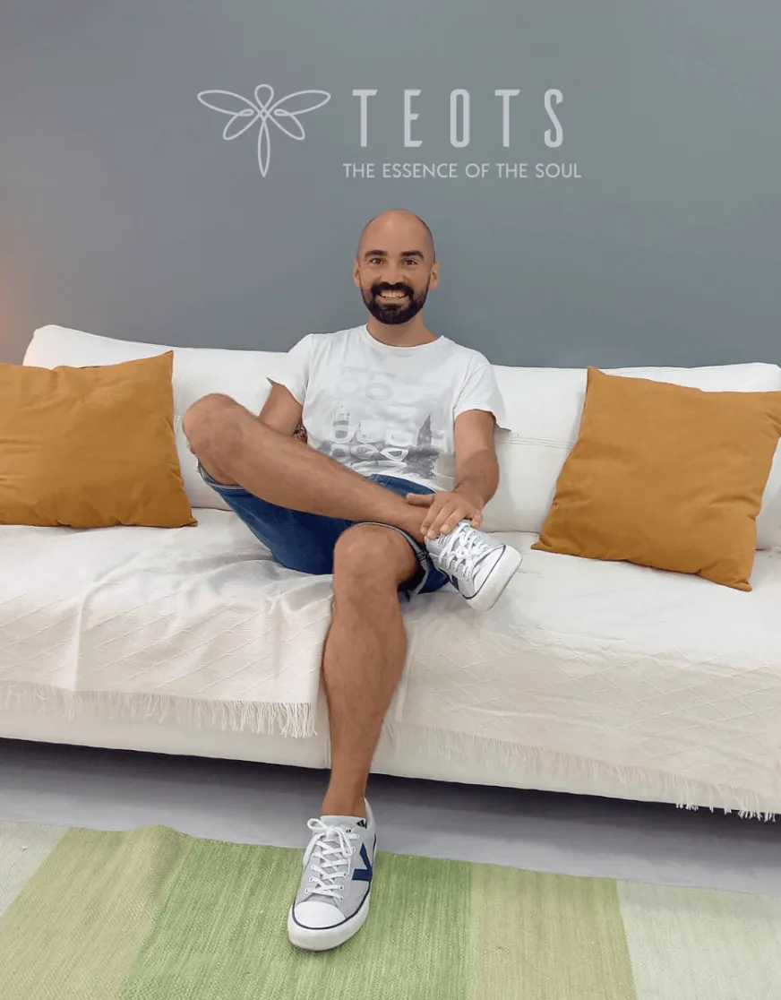
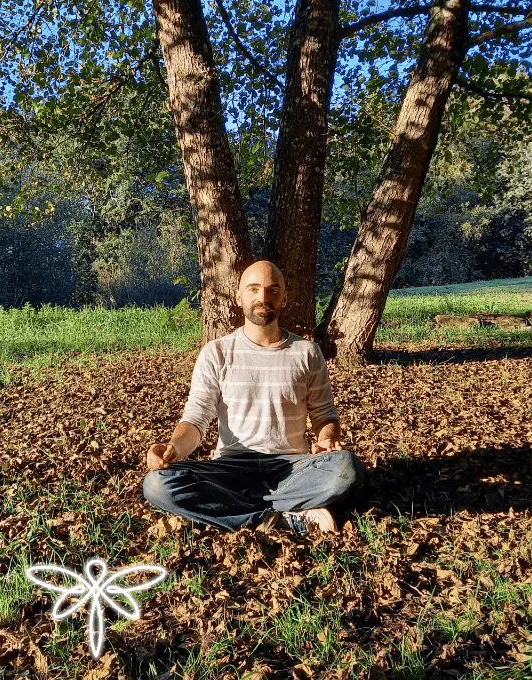
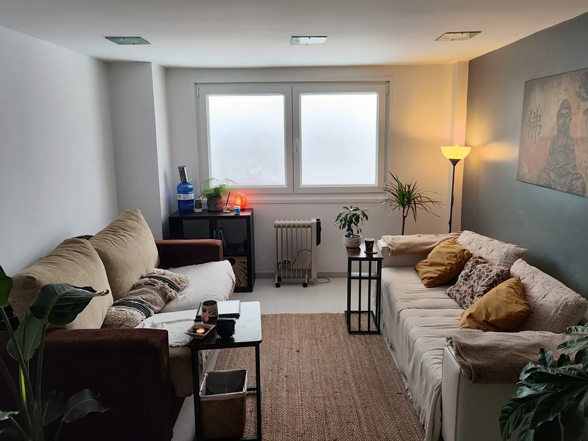
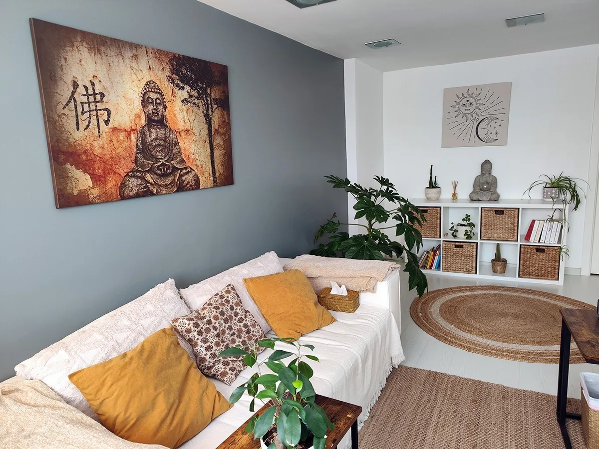

PSICOLOGÍA
"Ahí está el verdadero poder: tener ojos y no tener miedo. La verdadera sanación es la aceptación y el verdadero proceso es la entrega" — Claudio Naranjo
PSICOLOGÍA
A medida que crecemos vamos formando una personalidad, un carácter con ciertas conductas, condicionado por los mandatos del entorno en el que crecemos y experimentamos. Esto nos lleva a alejarnos de nuestra esencia, de lo que somos, sin condiciones ni juicios.
El camino de reencuentro con la esencia resulta una de las experiencias más sanadoras y transformadoras para volver a sentirnos serenos, livianos, en paz y en gratitud.
PROCESO EN DOS PARTES:

Primera – Sesiones individuales
Partiendo del motivo que nos ha traído a terapia, aprendemos a entender cómo funciona la mente como seres considerando que somos seres tricerebrados: cómo nos afectan las heridas de la infancia (traumas), y como estos provocan patrones (programas) que deviene en un personaje (nuestra personalidad condicionada) que nos dirige la vida, y que no nos permite ser libres.
Con esto, conocemos nuestras cargas familiares y heridas que tenemos por resolver.
Segunda – Proceso Crisálida
Aunque es opcional, es una etapa de comprensión mucho más profunda y un intenso proceso de transformación de los patrones, de nuestra coraza. Es un proceso de cambio de una vida más pesada, desesperanzada y cargada de sufrimiento a otra de más luminosa, donde la comprensión, la paz y la armonía que llevamos buscando desde siempre va apareciendo.
Acompañar a las personas en su camino hacia el autoconocimiento y desarrollo personal y espiritual, tanto en momentos de crisis y dificultades, como para seguir creciendo interiormente.
Normalmente, vivimos con las respuestas aprendidas que nos llevan a lo mismo, y necesitamos tomar consciencia de ello para reorientar nuestra vida de manera que nos sintamos más plenos. En ese proceso terapéutico, se abre la posibilidad de darte cuenta de tus miedos, heridas, inseguridades y bloqueos, y de cómo estos se han generado desde la infancia y se han mantenido en tu vida. Poco a poco irás aprendiendo a ver el programa condicionado que hay en ti -y responsabilizarte de él-, para pasar a una forma de vivir libre y fluida.
Con ese autoconocimiento, vivirás el presente con conciencia, sin estar atrapado en el pasado, ni preocupado constantemente por el futuro. Adquirirás herramientas para afrontar los conflictos o situaciones que vayan llegando el resto de tu vida. Cada momento de tu vida, será una oportunidad para conocerte, para crecer, para transformarse, para volverte más incondicionalmente feliz.
Consultas en español, gallego o Inglés.

EN QUÉ PUEDO AYUDARTE
• Si estás en un momento de crisis vital, no sabiendo muy bien lo que te ocurre, qué hacer, que sentir y que pensar.
• Si las emociones te aprietan y no te dejan sentirte libre, o las reprimes dejándote en un estado de desconexión contigo mismo.
• Si hay algo que te preocupa o agobia demasiado, y no te deja estar en paz.
• Si quieres tomar una decisión y te inunda el miedo.
• Si estás pasando o has pasado por una situación de duelo o pérdida de un ser querido, y te está costando integrarlo.
• Si has vivido algún hecho traumático y te cuesta volver a ser tú mismo.
• Si has perdido la confianza en ti o sientes que tu mundo se viene abajo.
• Si te encuentras bien, pero quieres seguir creciendo interiormente para vivir más en armonía contigo, con los otros y con el mundo.
Desde mi respeto y aceptación por lo que eres, te ofrezco un espacio donde se crearán las condiciones para poder ir colocando aquello que te impide avanzar hacia tu libertad y bienestar.
MANUEL LAMEIRO
Psicólogo Colegiado: G-06438
Graduado en Psicología con Mención en Psicología de la Salud e Intervención en Trastornos Mentales y del Comportamiento por la UNED.

Elegí ser psicólogo, porque me encanta ayudar a las personas a encontrarse bien con la vida. Ayudarlas profundamente, a encontrar armonía incondicional en ellas mismas y poder vivir desde la libertad.
Me he formado y bebido de distintas fuentes para tener una visión más integral y más herramientas para acompañar. Especialmente he profundizado en Psicología Transpersonal y Humanista, Eneagrama (en el Programa SAT, de la Fundación Claudio Naranjo), meditación y estados expandidos de consciencia.
El anhelo que siempre sentí por desarrollarme como ser humano también me ha permitido ser más consciente, con los numerosos retiros de meditación y el enriquecimiento a través de las experiencias y personas que he conocido en más de cincuenta países a los que he viajado.
Han sido clave los estados expandidos de consciencia a través de la Danza de éxtasis y la terapia asistida en California o Suiza, chamanismo en la selva amazónica, el ayuno, workshops y la práctica espiritual diaria.
Desde hace diez años he incursionado en la psicoterapia, como parte del Equipo de Respuesta Inmediata en Emergencias Psicosocial (Cruz Roja, 2012-2017), colaborando en retiros de meditación (Fundación Vipassana, desde 2012) y en voluntariados en India (2013) y Perú (2015).
Coordinador de Proyecto en la digitalización del libro “Un puente a la realidad” (Sergi Torres). Creador y administrador de los grupos de Facebook Psicología y Legislación (2015) y de Consciencia y Espiritualidad para niños (2014).
En 2023 fundé el Espacio TEOTS en Lugo y en 2024, el Espacio TEOTS One en A Coruña, con el fin de que las personas se beneficien de diversas terapias transformadoras y para que aquellos que deseen ganarse la vida ayudando a otros, dispongan de un espacio accesible.
Desde 2023, promuevo varios proyectos vinculados con la consciencia y la Inteligencia Artificial, algunos de los cuales ya están disponibles a través de esta página web.
ESPACIO SEGURO


ALGUNAS OPINIONES
Si has hecho algún proceso, agradezco si puedes dejar una referencia❤️

“Gran profesional. Transmite paz, tranquilidad, apoyo,... te da consejos y técnicas para aplicar en el día a día que realmente funcionan. Te acompaña para conseguir paz interior y crecimiento personal. 100% recomendable. ”
“Súper recomendado! Después de haber tenido experiencias con otros terapeutas notaba que simplemente me ponían un “parche” para ir superando situaciones complicadas pero seguía descontenta con mi vida, apática y en modo automático. Manuel trata el problema desde la raíz, explica todo con claridad y conecta el patrón de conducta presente con la situación inicial del pasado que nos lleva a actuar de esa manera para así poder ser conscientes de ello y sanarlo. Realmente siento cambios importantes y positivos en mi vida desde que acudo a terapia con Manuel, lo recomiendo al 100%.”
“Manuel ha dado terapia a mi pareja, Brais. Por estar lejos han sido sesiones on-line, pero hemos notado un cambio muy grande con este psicólogo. También puedo decir que es una persona humana y que se preocupa mucho en cada sesión, no podemos estar más contentos! GRACIAS”
“Después de casi 10 años probando con muchos psicólogos para tratar depresión severa, estrés postraumático y ansiedad generalizada, he podido llegar a una comprensión profunda de mis traumas y problemas en un lapso de tiempo bastante corto gracias a las herramientas que me ha dado Manuel. Ha sido un guía y amigo durante todo el viaje espiritual y psicológico, y la manera en la que trabaja con el paciente es tan cercana y profesional al mismo tiempo que es imposible no avanzar rápidamente en el proceso de sanación, tanto con uno mismo como con el entorno que lo rodea. No me cansaré de recomendarlo. La verdadera definición de un psicólogo que se preocupa por cada uno de sus pacientes de manera específica y personalizada. :)”
“Estoy muy contenta por la suerte que he tenido de conocer a Manuel, es un gran profesional y una persona excepcional. Se preocupa muchísimo por ti y cada sesión con él supone un gran avance. Agradezco profundamente haberlo encontrado. Gracias por tu gran ayuda Manuel!!!”
“Manuel es... Increíble como persona, y como profesional no tiene descripción. Jamás pensé que una sola persona me ayudaria tanto en mi proceso. No solo ha potenciado mis virtudes y ha pulido mis defectos, me ha dado herramientas para ser mejor persona, estar mejor conmigo mismo y relacionarme de forma mas pura y directa. Me ha ayudado muchísimo y el resultado fue impresionante. Muchas gracias, Manuel!”
“ES BUENA!!!, Y ES QUE POCO TIEMPO LLEVO PARA DARME COMPLETAMENTE CUENTA, DE QUE HE ENCONTRADO AL TERAPEUTA ADECUADO!!! NO ESCATIMA EN TIEMPO, TE HACE LLEGAR EL MENSAJE SIEMPRE TRANSMITIÉNDOLO CON ESA DULZURA Y ARMONÍA QUE LE CARACTERIZA, TE HACE COMPRENDER EL PROCESO DE TU VIDA (QUE YO HASTA EL DÍA DE HOY NO HABÍA COMPRENDIDO), TE SIENT´ES CÓMODA DESDE EL MINUTO CERO, Y LO MÁS IMPORTANTE, SI POR SEMANA TIENES UN PROBLEMA, SABES QUE ESTÁ AHÍ.... PARA MÍ ESTÁ SIENDO Y ES, EL TERAPEUTA IDEAL. GRACIAS MANUEL, PORQUE AUNQUE DIGAS QUE PONGO DE MI PARTE, YA PUSE MUCHAS ANTES, Y ÉSTA!!!, ES LA PRIMERA VEZ QUE AVANZÓ. Y TOMO LAS RIENDAS DE MI VIDA. GRACIAS POR MUCHO Y POR TODO MANUEL”
“He conectado con Manuel desde el primer momento, es una persona atenta y amable, da facilidades para todo. Estoy en el camino del proceso y me siento súper acompañada.”
“Manuel es súper accesible, cercano, y cariñoso. Se esfuerza por crear un espacio de intimidad y calma, de confianza y apertura. Más allá de la psicología, es intuitivo y alineado con sus valores, y escucha profunda y atentamente. Nuestra primera sesión fue de más de 2h! Y terminó porque yo estaba agotada mentalmente, pero hubiese continuado de haber surgido así. Implicación, humildad y calma, muy buena vibra. Súper recomendado.”
“Manuel es muy guay! La terapia con el me esta ayudando muchísimo. Busca el origen del problema y todo es entorno a eso. Lo recomiendo 100%”